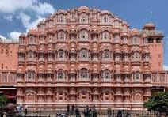

About Hawa Mahal
The Hawa Mahal, also known as the "Palace of Winds", is one of Jaipur’s most famous landmarks.
Built in 1799 by Maharaja Sawai Pratap Singh, the palace is known for its unique honeycomb-like façade with 953 small windows called jharokhas.
These windows were designed so royal ladies could observe street festivals and city life while staying unseen.
The red and pink sandstone structure reflects Rajput architectural brilliance and offers stunning views of the Jaipur cityscape and the Jantar Mantar from its top floors.
Visiting Information
- Location: Badi Choupad, Jaipur, Rajasthan
- Timings: 9:00 AM – 5:00 PM (every day)
- Entry Fee: ₹50 (Indians), ₹200 (Foreigners)
- Best Time to Visit: October – March (pleasant weather)
Highlights
- 953 small latticed windows allowing cool breezes during summers.
- Panoramic views of Jaipur city and Jantar Mantar observatory.
- Unique pink sandstone architecture that glows in sunlight.
- Part of Jaipur’s City Palace complex and near major attractions.
Travel Information
- Nearest Railway Station: Jaipur Junction (~5 km)
- Nearest Airport: Jaipur International Airport (~12 km)
- Local Transport: Easily accessible by auto-rickshaws, cabs, and buses. Cycle rickshaws are popular for short distances in the old city.
- Accommodation: Wide range of budget, heritage havelis, and luxury hotels available nearby.
- Average Daily Expense: ₹2,000 – ₹5,000 depending on stay and travel preferences.
⬅ Back to Home